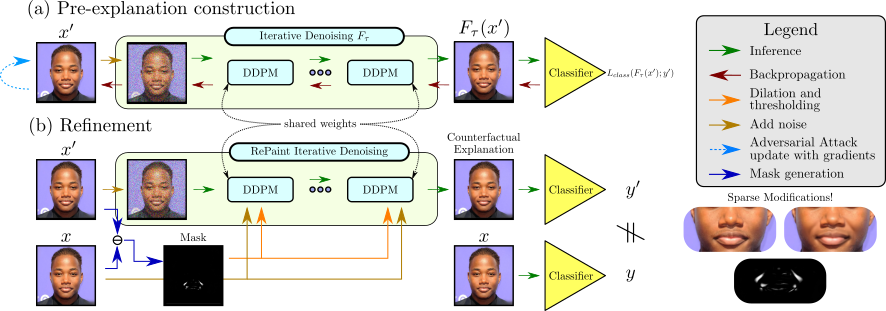
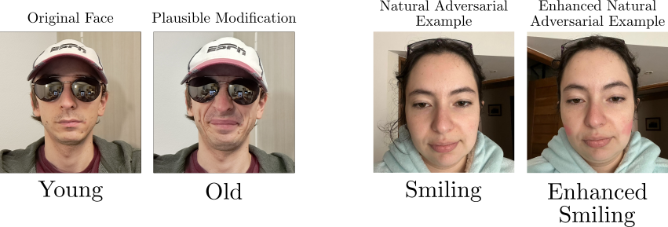
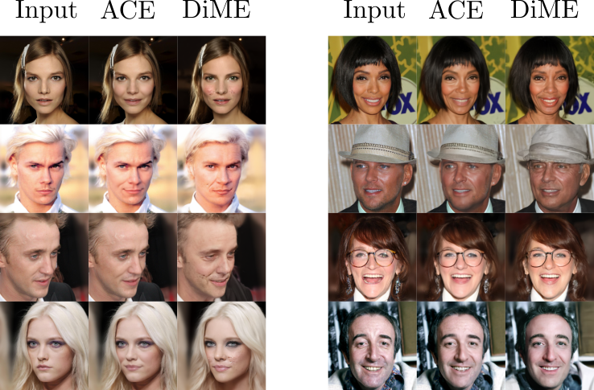

Links
TL;DR
We propose to use Adversarial Counterfactual Explanation (ACE). We generate a counterfactual explanation by attacking the image through a DDPM-Classifier ensemble. Finally, we post-process the explanation via an inpainting strategy.
Abstract
Counterfactual explanations and adversarial attacks have a related goal: flipping output labels with minimal perturbations regardless of their characteristics. Yet, adversarial attacks cannot be used directly in a counterfactual explanation perspective, as such perturbations are perceived as noise and not as actionable and understandable image modifications. Building on the robust learning literature, this paper proposes an elegant method to turn adversarial attacks into semantically meaningful perturbations, without modifying the classifiers to explain. The proposed approach hypothesizes that Denoising Diffusion Probabilistic Models are excellent regularizers for avoiding high-frequency and out-of-distribution perturbations when generating adversarial attacks. The paper's key idea is to build attacks through a diffusion model to polish them. This allows studying the target model regardless of its robustification level. Extensive experimentation shows the advantages of our counterfactual explanation approach over current State-of-the-Art in multiple testbeds.
Pipeline

Attack Evolution
Left: Pre-Explanation | Right: Filtered Explanation
With ACE, we can create natural adversarial examples
ACE helps in finding weaknesses.
ACE vs DiME
ACE qualitatively performs better than previous State-of-the-Art.
Citation
@inproceedings{Jeanneret_2023_CVPR,
author = {Jeanneret, Guillaume and Simon, Lo\"ic and Fr\'ed\'eric Jurie},
title = {Adversarial Counterfactual Visual Explanations},
booktitle = {Proceedings of the IEEE/CVF Conference on Computer Vision and Pattern Recognition (CVPR)},
month = {June},
year = {2023}
}